W1 & Q1 — WorldCast's state representation and update vs. an adapted MultiGen.
Each client re-localizes its player from its own generated frames every block, so position error stays bounded; a MultiGen-style update, which integrates learned increments, drifts to four times the error within a minute.
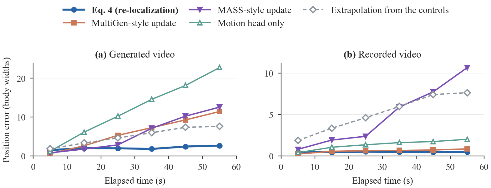
Position error in body widths per 10-s interval, median over clients. At 50–60 s on generated video: 2.64 with Eq. 4, 11.42 with the MultiGen-style update.
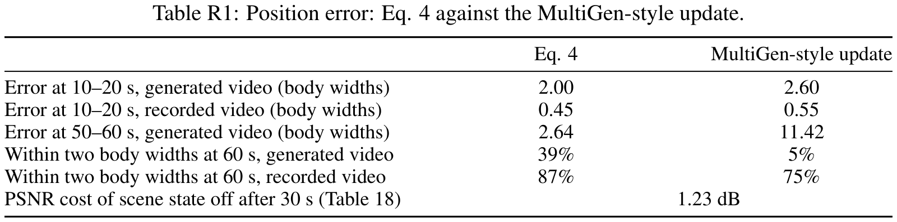

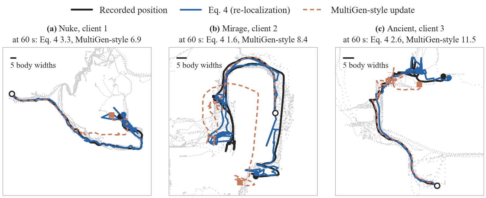
One minute of generated video. Open circle: start; filled marks: position at 60 s; grey dots: other players' positions on that map.
Cross-view memory (scene state)
Clients share their generated blocks, so what one client has drawn (smoke, an opened door, a wall seen before) reappears in others' views; without scene state it is lost.
Details
With the state model's data and recipe, we trained a MultiGen-style update: a small transformer reads the client's frame features and controls, the pose estimate and a depth read-out ray-cast from the map mesh there; its displacements are integrated without re-localization. It and Eq. 4 read the same videos (Table 6), open loop.
Position error in body widths per 10-s interval, on generated and on recorded video. From 10–20 s on, Eq. 4 errs less than the MultiGen-style update on both. Relative to the motion head, pose and map inputs slow the drift; re-localization limits it.
W1 — One GPU per player is a choice, not a requirement
Between two machines on our cluster network, Solaris's exchange alone exceeds the 62.5-ms frame budget; WorldCast's per-block exchange takes under 1 ms.
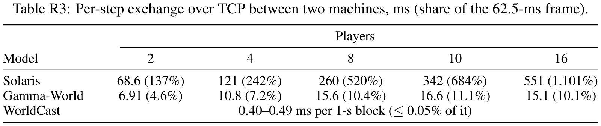
Details
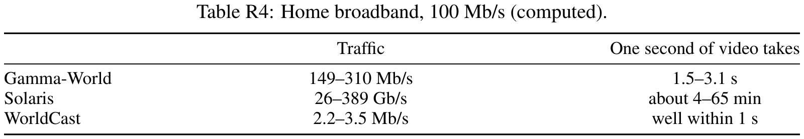
Between the two machines over TCP, Solaris finished within its slot for none of its paced steps; every other row kept up in nearly all of them. WorldCast sends one small message per other client and one memory entry per block.
W2a — FPS excludes waits; latency not evaluated
Table 7 reports 18.7 FPS per client at 16 clients with the evaluation code and the full decoder. The optimized serving path runs the same 16 clients at 31.1 FPS with the tiny decoder, even with lockstep waits counted.

Every serving-path client's latents are bit-identical to the offline client's.
About 0.73 s from key press to screen at the median, set by the one-second block as in any block-wise generator: a press waits for the next block's control read, and the first frame follows in under 0.2 s.
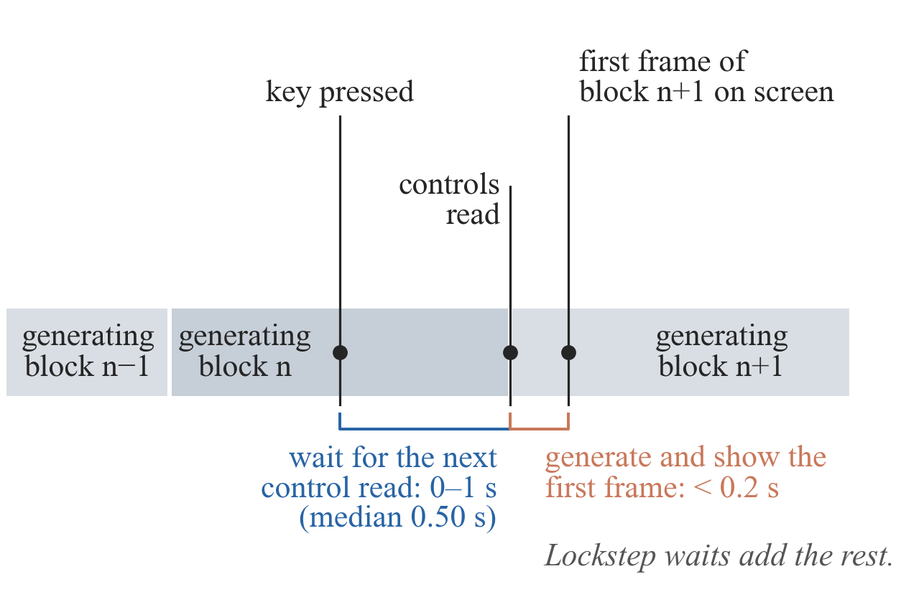
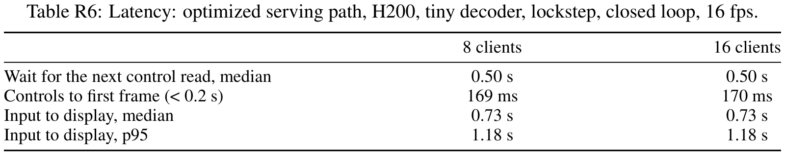
Details
Input-to-display latency is set by the block size, as in any block-wise generator: controls are read once per one-second block, just before it is generated (App. B), so a key press waits for the next block's control read, and that block's frames then stream in real time.
Why it is faster
Engineering optimizations. They leave the generator's latents unchanged.
- Warm-up and steady scheduling: the session is warmed up before timing, and each client is pinned to its CPUs.
- Message mesh: clients exchange messages over direct connections instead of polling a shared directory; a waiting client wakes as soon as a message arrives.
- Shared depth: a client's depth map travels with its memory entry, so peers do not recompute it.
- Retrieval threads: memory retrieval projects the cameras on four threads, with the matrix products under one lock so that results stay identical.
- Tile-limited retrieval: only the image tiles that can fill a still-missing pixel are projected.
- Background reprojection: a client's own reprojections run on a background thread.
- Peer cache: received latents are cached instead of re-read.
- Early hand-off: a block's frames go to the decoder before the block's bookkeeping finishes.
- Prefetch: GPU work that needs only the client's own data starts right after the block is committed.
Decoder. The tiny decoder replaces the full VAE for display only. The latents are identical, so only the display decoder changes; against the recording of the same window the two decoders are equally close, so the display decoder does not move the session away from the recording.
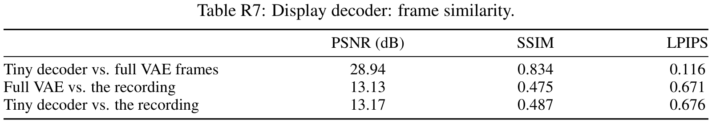
W2b — Network delays not evaluated
Closed loop, with random delays of zero to two blocks, 10% or 30% of messages lost, or one client always a block late, Rendered drops by at most 0.031 and image quality is unchanged (PSNR within 0.051 dB).
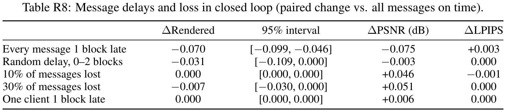
W2c — Hour-long runs: one client, recorded states for others, resets
Five clients run for 13 minutes over twelve consecutive rounds on recorded positions, and for three hours with the state model, with nothing reset and the scene state never cleared.
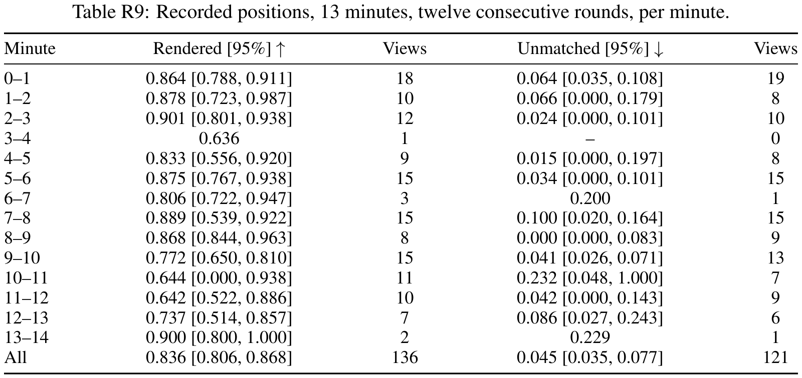
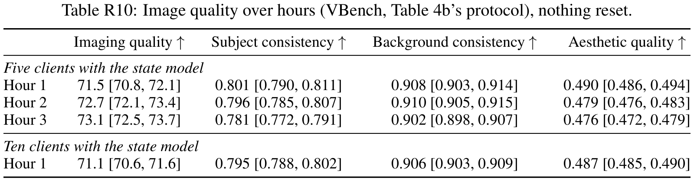
Details
Whole session: Rendered 0.836 [0.806, 0.868], Unmatched 0.045 [0.035, 0.077] (95% intervals).
W2d — Firing missing in other views; why not evaluated?
The field carries each visible player's attack and reload keys and weapon. Weapons and aim are drawn in the other views; the muzzle flash is drawn less reliably, since a close, visible firing player appears in only 0.5% of training frames. Examples:
Each example is one window with the recorded positions; the attack-zeroed panel re-renders it with only that player's attack and reload keys zeroed; the third panel is the recording.
On Table 2's ten-second windows and over whole rounds with the state model, generated video matches the same measures on the recorded views.
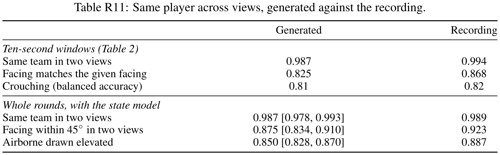
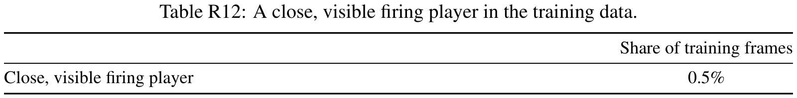
Q2 — Four-step examples, evidence against the teacher, longest closed loop
On the same windows and inputs it matches its bidirectional teacher, drawing other players slightly more often (Rendered +0.033), and unlike the teacher it streams in real time.
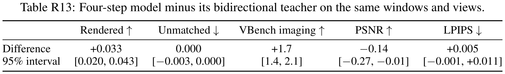
Left to right: bidirectional teacher, four-step model, recording.
Details
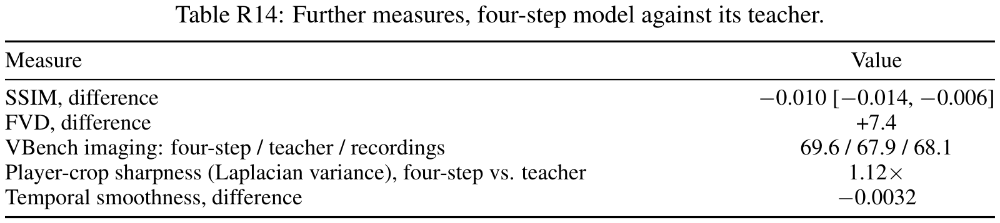
The four-step student has higher reference-free imaging quality and sharper player crops; temporal smoothness is slightly lower, so the evidence supports sharper, clearer player contours rather than smoother motion.
Q3 — Consistency with more players than in training
With ten concurrent clients, Rendered is 0.814; with seven or fewer it is 0.821, and with one to four other players in view it is 0.795–0.821. The page also shows all twenty clients in one constructed twenty-player world.
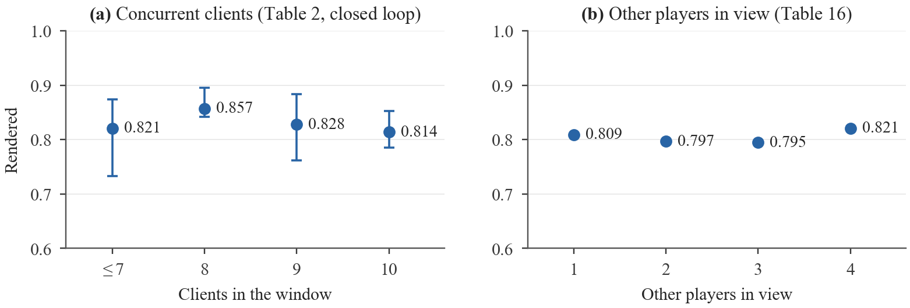
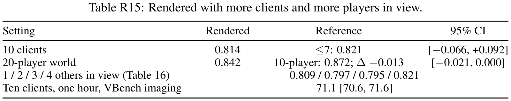
Dots: median over views; bars: 95% intervals over windows.


Four clients of one constructed twenty-player world at the same instant (recorded positions).


All ten clients, nothing reset, at the elapsed times shown (with state model).
All ten clients with the state model for one hour, nothing reset: VBench imaging quality 71.1 [70.6, 71.6].
Details
The displayed grid is one representative world selected before visual inspection; the table reports the pooled same-round estimate over all worlds.
The twenty-player video is a constructed world formed by joining two recorded ten-player rounds on the same map. Every tile is a client view; the paired recorded player states and shared scene state define the controlled placement test. There is no recording of a twenty-player match, so PSNR, LPIPS and FVD are not computed for this video.